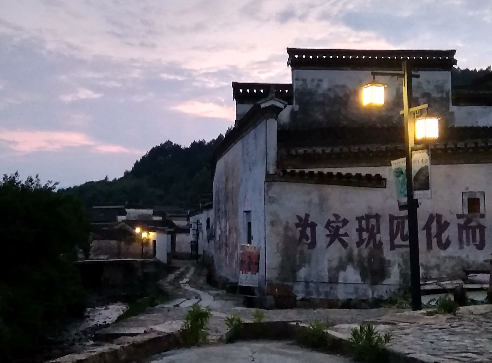
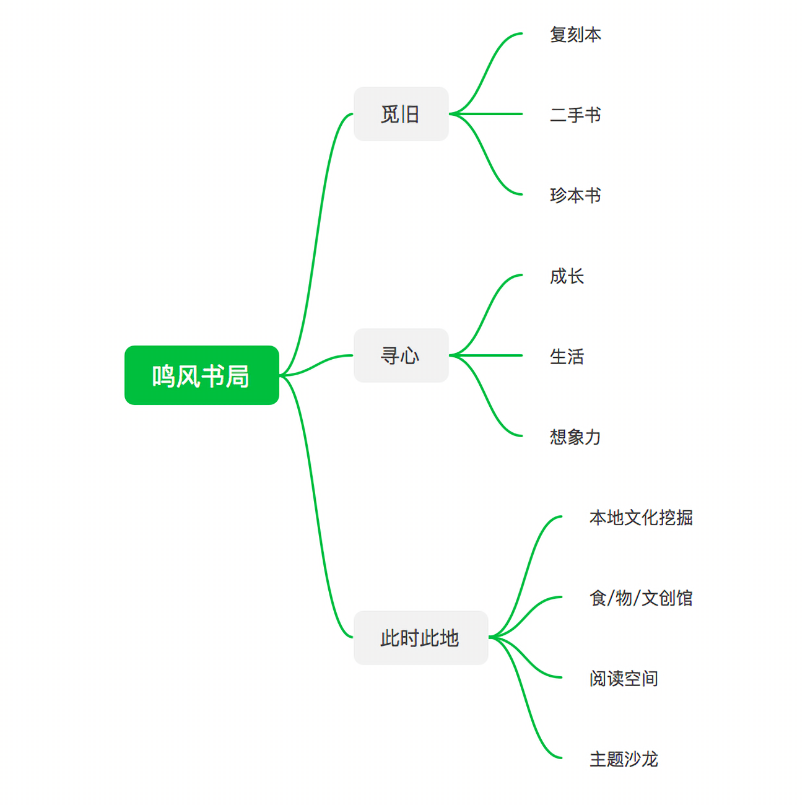

鸣风书局：在春天萌芽的梦

古村不老，只要故事和人依旧生动
为自己和土地上的人们，开一家书店
自从2018年2月来到黄田，转眼已过三年，在这过去的三年里，居所不定，近似于寄居的状态，似乎随时都可能离开，也就完全谈不上在村里做点什么。2020年秋，终于找到了合适的可以长居的房子，若无意外，至少要在此安稳十年。
正所谓安居乐业，住所已定，乐业的想法便自然生发。此地和远方变得同等重要，因为在的地方就是生活的地方——是“生活”而非“体验生活”。
我们和邻居，成了常住古村的两家，去年就商量要在村里开一家书店，后来因为都要修缮房子，书店就只停留在了构想阶段。春节前，新居已经入住，我也开始重启书店的筹备工作：了解和学习书店运营的各种知识、思考自身书店的定位和价值所在、持续的一本本筛选第一批书籍。
而今，万事俱备，也到了想跟大家交流的时间，我愿借助以下的文字，向您介绍在这千年古村——黄田，我们想开一家什么样的书店。

黄田古村的书香遗迹
为何想要开一家书店？
第一、于我而言，应该可以列出三个原因：首先我需要埋下头做事，否则便会在内心产生恐慌，对于中/青年人来说，时间太宝贵了，虚度一日就意味着生命的贬值；其次既然决定常住于此，那就要通过具体的事来与脚下的土地和身边的人联结，联结才能扎根，扎根才能心安；最后随着孩子逐渐长大，为人父母，陪伴便不再是时间长度上的累积，每个人都应该有独属于自己的道路，父母如何经营自己的人生将会被身边的孩子直观的看到和听到。这就是从我内心里，想要在此地认真做些事的理由。
第二、那为何要选择做一家书店呢？是为构建此地的人文环境尽力。从孩子的角度来说，三岁前自然环境更重要，三岁后人文环境更重要，前者是为孩子的感官保护和身体发展奠定基础，后者是为孩子的思想和精神世界营建提供养分。于而今的中国，乡村和城市是分裂的，乡村有自然环境之利，但却是普遍的文化荒漠；各种文化机构和资源聚集在城市，但城市的失序发展又难以提供优良的自然环境，因此我一直平视乡村和城市，从不夸大或者贬损其中的一个。既然选定要居住在村子里，那么我们该做点什么来弥补现实的不足呢——如果无法把孩子送到环境中去，那么就把环境以及营造环境的人带到孩子们面前；从成人的角度来说亦然如此，每个人不管何时都需要成长，没有人愿意生活在自然/人文的荒漠之中，眼睁睁看着自己干涸和贫瘠。而一家饱含精神品质的书店，可以成为孩子和我们的一汪清泉。

静谧乡村的几盏灯光
关于名字的解释
去年某一天，在思慎堂前的空地上踱步，突然被灵感击中，脑海涌现出了这个名字，便挥之不去，后来揣测其意，可做如下解：
首先是鸣，世间万物，不平则鸣，如风之鸣，万物作响。人之一生更应如此，发光、发热，更要发声。
其次是风，风有万千，为何而鸣？于黄田村而言，自然是藏书兴教之风、晴耕雨读之风，斯风不存，故需后来者承其志，扬其风。
不一样的书店
在最初构想的基础上，融合来自家人和朋友的建议，最终形成了下图所示鸣风书局正式的结构。

三个构成部分：觅旧、寻心、此时此地
- 从时间意义上来说，三者代表了过去、未来和现在，我们从过往的生活中汲取营养，安守此时此地的生活，努力且带有意识的在每一个细节中成长。
- 从实际内容上来说，三者代表了书店的不同主题：旧书、新书、公共空间。
三大书籍主题：成长、生活、想象力
- 不管旧书，还是新书，都遵循这一原则：鸣风书局的选书只在 （教育）成长、生活（方式）、想象力这三大主题之中——「成长」让人内在生出力量，「生活」召唤人贴近土地、将品质和美融入物质生活，而「想象力」则满足我们对他人和远方的渴望、借助故事丰盈我们的精神世界。
书店的三种角色
从「此时此地」的视角，我们可以归纳出鸣风书局未来承担的三种角色：
- 本地文化挖掘：以书店之名，挖掘和整理黄田历史文化资源，参与黄田朱氏培风博物馆的筹建。构建人文环境，首要的就是本地既有历史和文化的挖掘、呈现，这些是早已深烙在泥土之中，是此地之所以成为此地的原因。当我们与本地文化建立起联结，那些铺满条石的道路和高大建筑，将不再冰冷和无言。
- 食/物/文创馆：以书店为平台，做健康生活方式的倡导者。我们将优选日常生活使用频次高的食/物，以村内居民为主，常态化供应，既可以便利对生活有品质要求的朋友随时选用，价格上也会比大家自行购买优惠，而且还可以减少在村居住的快递数量（当然也就减少了各种快递包装）。以「食」而言，将会以五谷（大米、麦子、黄米、小米、各种豆子）、五味（酸、甜、苦、辣、咸）相关食材为主。
- 阅读空间+主题沙龙：以书为媒，向内为黄田居民的文化中心，向外为黄田文化的传播平台。除书店的经营活动外，在村的居民/游客可以来此自由阅读，分享交流。
书店的几处细节
- 依据书的内容进行分类（而非属性），在「成长、生活、想象力」范畴之下设置明确的细分主题（含十五个基础主题、一个特设主题）
- 关联式陈列，在同一细分主题之下，旧书、新书、食/物/文创、本地文化元素置于一处。
- 顾客可订阅某个或多个细分主题，以跟踪相应主题的新书上架信息。
- 构建具有现实价值、当下未有出版的公版图书/资料清单，在店内提供影印版。